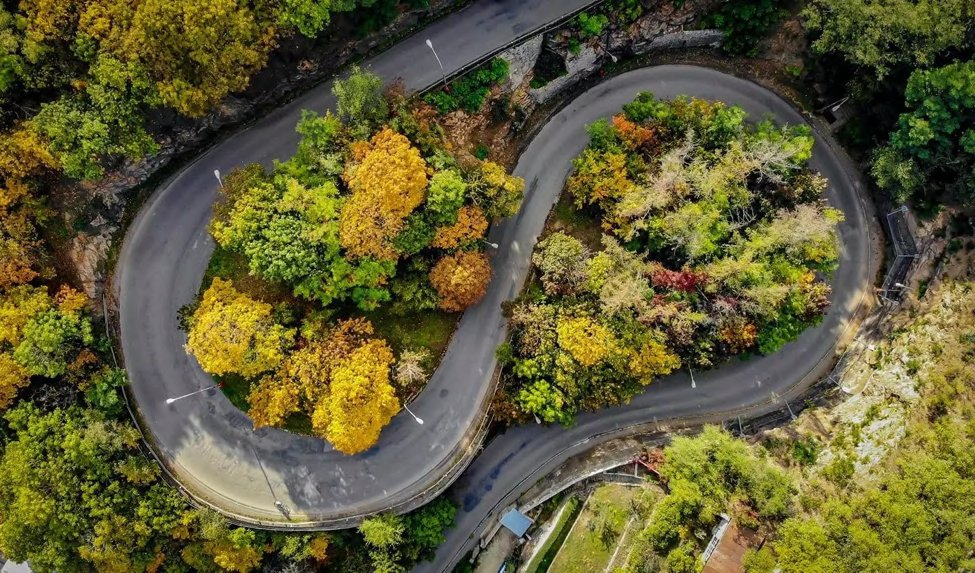

What is
Serpente.
Serpente is a new Italian bistro in Roztoky, a small town just north of Prague. It opened with one clear goal: bring honest Neapolitan pizza to a place that did not have it.
The place

Roztoky is a town of around 9,000 people. Its most recognisable feature is the serpentine road that climbs from the lower part of town to the upper one. Most locals know it as the road that backs up in summer and slides in winter — but it is also the visual symbol of the town.
The Italian word serpente means snake. The Czech word serpentina means a winding road. The name of the bistro plays on both — but the actual reference is the road, not the snake.
The owners
Every visual decision in this project starts with the two people behind the bistro. Their personal story is the foundation of the brand.
An experienced chef who worked in restaurants across Italy, Spain, and Prague. He brings the kitchen know-how and the personal contacts to Italian family producers. He chooses the cheese, the cured meats, and the olive oil himself.
Grew up in Roztoky. She knows the local community and runs the business side of the bistro. Her connection to the town shaped the local character of the brand — from the name to the colour palette.
When they moved to Roztoky, they realised the town had no place to get a proper Neapolitan pizza. So they decided to open one themselves. Their two priorities were clear from the first meeting:
"We don't want it to look like an ad for pizza. We want it to look like us."
The concept
Serpente is a casual neighbourhood bistro, not a fine-dining restaurant. The menu is small but considered: Neapolitan pizza with imported San Marzano tomatoes, fresh mozzarella, prosciutto from family farms in northern Italy, and seasonal specials. The wine list is short and focused on small Italian producers.
The atmosphere is relaxed and personal. The owners are usually on site. Regulars know each other. The place feels closer to an Italian neighbourhood trattoria than to a chain pizzeria.

The market gap
Roztoky has a few pizzerias, but none of them had a strong visual identity before Serpente. Most use generic templates: red logos, italic fonts, photos of pizza with a flame in the background. The local market was missing a place that took its visual presence seriously — and that gap became the opportunity for this project.